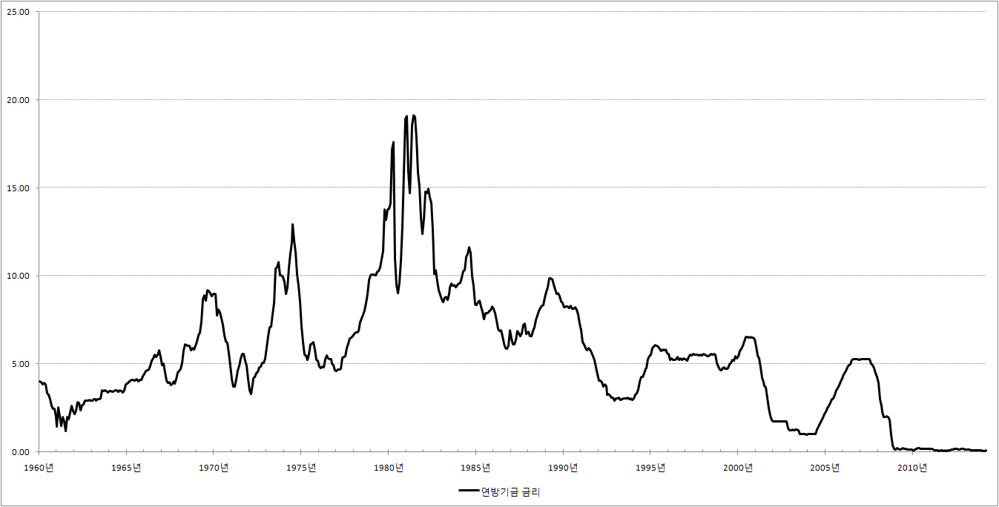

■ 연방기금금리란?
미국에 있는 각종 은행이 이웃 은행한테 급전을 빌릴 때의 금리를 연방기금금리(Federal Funds Rate)라 합니다.
만약 연방기금금리가 높다면 일반 시민들이 은행에서 돈을 빌릴 때의 금리도 높아지게 됩니다. 이웃 은행에서 5%의 이자를 주고 돈을 빌렸는데, 일반시민에게 1%의 이자를 받고 돈을 빌려줄 수는 없기 때문입니다.
하지만 연방기금금리가 낮아지면 일반시민들은 그만큼 낮아진 금리로 돈을 빌릴 수 있게 됩니다.
그래서 백성들의 풍요로운 삶에 관심이 많은 연방준비제도는 연방기금금리를 특별한 애정을 가지고 지켜보고 있습니다.
[연방기금금리와 경제]
연방준비제도는 연방기금금리를 이용해 경제를 살리기도 하고, 때로는 질주하는 경제에 브레이크를
걸기도 합니다.
연방기금금리를 이용해 경제를 살리는 방법은 간단합니다. 예를 들어 지금 경제가 어렵다고 합시다. 이때 연방준비제도는 연방기금금리가 충분히 낮아질 만큼 돈을 팍팍 찍어냅니다.
쉽게 말해서 지금 현재의 연방기금 금리가 5%인데, 경제를 살리기 위해서는
연방기금 금리가 1%쯤 되어야 한다고 합시다.
이때 연방준비제도는 연방기금금리가 1%가 될 때까지 돈을 찍어냅니다. 연방준비제도가 돈을 팍팍 찍어내면
그만큼 돈을 구하기가 쉬워지고, 그 결과 금리가 점점 낮아져 마침내 1%가 됩니다.
이렇게 해서 연방기금금리가 1%까지 낮아지면 어떤 일이 일어날까요? 연방기금금리가 5%에서 1%로 낮아지면 일반시민들과 사장님들은 옛날보다 낮은 금리로 돈을 빌려서 쇼핑을 하고, 공장을 지을수 있게 됩니다. 그리고 사람들이 열심히 쇼핑과 투자를 하는 만큼 경제가 좋아지게 됩니다.
하지만 경제가 너무 좋아서 난리라면 반대의 상황이 연출 돱니다. 즉, 1%인 연방기금리가 5%,또는 6%가 되도록 돈을 팍팍거두어 들여서 경제에 적당히 블레이크를 겁니다.
물론 그렇다고 앞에서 예를 든 것처럼 한꺼번에 돈을 팍팍 풀거나 거둬 들이지는
않습니다. 아주 조금씩, 찔끔찔끔 감질 맛 날 정도로 돈을 풀거나 거두어 들입니다. 즉 금리가 0.25%포인트씩
낮아지거나 높아질만큼 돈을 풀거나 조여서 경제를 조절합니다.

☞ 관련링크 : 양적완화,
연방기금금리와
한국경제